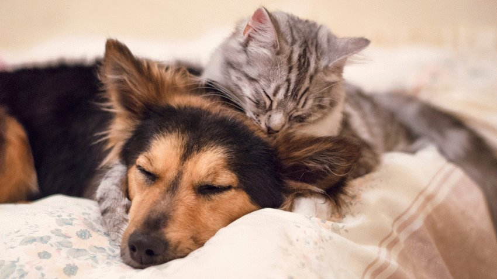
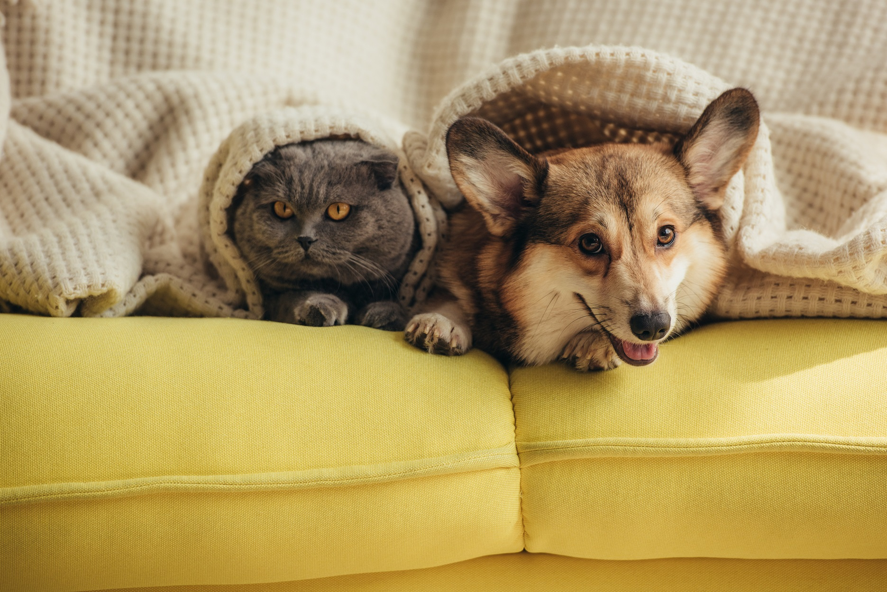

Суперечка між собачниками та кошатниками про те, яку тварину краще тримати, – вічна суперечка, й кожна сторона знаходить вагомі аргументи на захист своєї позиції. Якщо у людини вже сформувалися певні уподобання, переконати її складно. Але буває, що дитина просить батьків завести кошеня або цуценя, все одно кого. Або доросла людина хоче, щоб поруч була жива істота, не співунка-канарка в клітці або німа рибка в акваріумі, а вихованець, якого можна погладити, взяти на руки або обійняти, з яким можна гратися, гуляти, розмовляти. Щоб в такій ситуації зробити правильний вибір і уникнути розчарувань в майбутньому, потрібно чітко уявляти, чого можна очікувати від кішки і від собаки, до чого бути готовим.
Умови проживання
У мешканців невеликих міських квартир просто немає умов для утримання великих собак, яким необхідний простір і багато руху. Їм доводиться робити вибір між кішками та собаками мініатюрних порід. Жителям багатоповерхівок, які вирішили завести кота, обов'язково потрібно подбати про встановлення москітних сіток на вікна. Влітку, коли вікна та кватирки відкривають для провітрювання, кішки часто з них вивалюються. Якщо квартира розташована високо, падіння може призвести до серйозних травм і навіть смерті тварини. З собаками такий ризик відсутній, у них немає звички дертися по шторах і дрімати на стулці вікна. У приватному будинку з власним двором можна завести і собаку будь-якої породи, і кішку, й обох вихованців відразу.
Необхідність вигулу
Основна незручність, з якою стикаються власники собак – необхідність їх вигулу. Собаки під час прогулянки справляють нужду, спілкуються, отримують нову інформацію, скидають надлишок енергії та задовольняють потребу в русі, фізичній активності. Без регулярних прогулянок собаці загрожує ожиріння, м'язова дистрофія, та й характер у таких вихованців псується, є ризик, що вони стануть агресивними, некерованими. Якщо дорослому собаці досить 2-3 вигулів в день, то з цуценятами необхідно гуляти 4-6 разів. Навіть собак-компаньйонів, представників декоративних порід необхідно щодня вигулювати мінімум протягом години. А загальна тривалість прогулянок робочих собак може досягати 4 годин на день, і неспішний темп для них не підійде. Господареві доведеться самому здійснювати пробіжку або крутити педалі велосипеда, щоб вихованець гарненько розім'явся. Необхідність вигулювати активну собаку – відмінний стимул для занять фітнесом, але не у всіх є достатньо часу та відповідні умови (парк, лісопарк або майданчик для собак неподалік від дому). Більшість кішок абсолютно спокійно переносить тривале перебування в чотирьох стінах, потрібно тільки забезпечити їх лотком і відвести куточок під спортивно-ігровий комплекс для емоційної розрядки та профілактики гіподинамії. Породисті кішки зазвичай залишають будинок тільки в переносці, коли їх везуть до ветеринарної клініки або на виставку. А якщо вихованець ріс не в тепличних умовах, а був узятий в дім з вулиці, його після вакцинації та протипаразитарної обробки можна випускати гуляти самостійно. На вулиці і кішкам, і собакам, залишеним без нагляду, загрожує ряд небезпек. Але кішки краще пристосовані до самостійних прогулянок, і їх вільний вигул не вважається порушенням громадського порядку.
Догляд, гігієна
І кішок, і собак необхідно регулярно вичісувати, особливо в період линьки, складність догляду за шерстю залежить від її типу. Ті й інші тварини потребують туалету очей, вух, під час і після нежитю необхідно очищати ніс від виділень. Фахівці рекомендують не обмежуватися застосуванням спеціальних ласощів та іграшок для профілактики зубного каменю, а чистити зуби і кішкам, і собакам.
- стрижка або триммінг;
- часте купання. В середньому досить 2-4 разів на рік, хоча потрібно враховувати тип шерсті, спосіб життя;
- підрізання кігтів. Якщо кішка регулярно користується кігтеточкою, то ця процедура зайва, а якщо періодично гуляє на вулиці, то і зовсім протипоказана.
Собак необхідно регулярно стригти, а жорсткошерстих – тримінгувати (вищипувати відмерлі волоски), це ще більш копітка процедура. Їм потрібно мити лапи після кожної прогулянки, а якщо вихованець забруднився весь, то купати повністю. Собаки на прогулянці сточують кігті об тверді дорожні покриття, але часто вони відростають швидше, ніж сточуються, особливо взимку, коли лежить сніг. Тому рекомендується в середньому двічі на місяць підстригати собаці кігті.
Вагомий аргумент на користь кішок – відсутність запаху шерсті. У будинках, де тримають котів, специфічний запах відчувається, якщо тварина не привчена до лотка (або господар забуває міняти наповнювач), і якщо залишає мітки. Проблему міток зазвичай вирішує рання стерилізація (кастрація), але не завжди. Коти й кішки мітять територію в період статевої тяги, коли відчувають себе пригніченими, ревнують до інших вихованців, нових членів сім'ї, мстяться господареві. Але пахнуть саме виділення кішок, а не їх шерсть. Якщо тварина вихована, стерилізована, не страждає на захворювання сечовидільної системи, появи неприємного запаху можна уникнути. А ось шерсть собак виділяє специфічний запах псини, який неможливо заглушити. Часті купання тільки стимулюють підвищену активність залоз, які виробляють пахучий секрет.
Ще один момент. Для нестерилізованих кішок характерна відсутність кров'яних виділень під час тічки, та й взагалі виділення практично непомітні, кішки відразу вилизуються. А господарям нестерилізованих собак-дівчаток доведеться подбати про спеціальні труси типу памперсів для захисту меблів і килимів.
Харчування
Для кішок і собак випускається безліч готових кормів, сухих і вологих, базових і спеціалізованих, для різного віку, порід, так що організувати харчування можна без особливих зусиль, але потрібно враховувати фінансовий аспект. Якщо порівнювати кішок і собак дрібних, мініатюрних порід, то витрати на їх харчування приблизно однакові. Собаки середніх, великих і особливо гігантських порід з'їдають набагато більше кішок, прогодувати такого вихованця складніше.
Кішки вважаються більш примхливими, вибагливими до їжі, ніж собаки. Звичайно, мають значення харчові звички, вироблені з дитинства, є розпещені собаки та всеїдні кішки. Але вчені встановили, що у кішок більш складний смаковий аналізатор, вони здатні розрізняти відтінки смаку, недоступні людям і собакам. Так що вибірковість кішок в їжі – це не примхи, а особливості фізіології, тому підібрати корм, що припаде муркотону до смаку, буває непросто.У кішок добре розвинене почуття насичення, є «харчові гальма», вони вміють вчасно зупинятися, не переїдати. Цей механізм дає тимчасові збої в перші місяці після стерилізації та якщо тварина довго голодувала, недоїдала. Але в більшості випадків кішці можна насипати сухого корму про запас, на цілий день або кілька днів, вона його розподілить самостійно на весь період відсутності господарів. Собака в такій ситуації з'їсть весь вміст миски за один прийом, так що годувати його потрібно строго по годинах або встановити автоматичну годівницю з дозатором.
Шум
Собаки гавкають, гарчать, виють. Кішки нявкають і муркочуть. Від кого більше шуму, зрозуміти нескладно:
- собачий гавкіт і виття, як правило, значно голосніші за котяче нявкання (якщо не брати до уваги котячі крики в період статевої жаги), завдають більше незручностей господарям і частіше викликають незадоволення сусідів;
- уникнути котячих концертів, дуже неприємного, пронизливого різновиду нявкання, дозволяє стерилізація;
- якщо гучні, тривалі гавкіт і нявкання зазвичай дратують, то тихе утробне муркотіння, гурчання більшості людей приносить задоволення, і навіть має психотерапевтичний ефект.
В принципі, від собак більше шуму, ніж від кішок. Але слід врахувати, що виховані дресировані собаки підкоряються команді: «Тихо!», а змусити замовкнути кішку практично неможливо.
Виховання, дисципліна
Вихованню піддаються і кішки, й собаки, виховувати потрібно тих і інших, але обсяги виховної програми розрізняються. Обидва вихованця повинні бути привчені до режиму, місця для сну, пам'ятати перелік заборон і дотримуватися їх, спокійно переносити гігієнічні процедури, огляд, який виконує господар або ветеринарний лікар. Крім того, до програми-мінімум для кішок входить формування таких умінь і навичок:
- користуватися лотком (унітазом) і кігтеточкою;
- приходити на поклик;
- виконувати забороняючу команду.
У курс послуху собаки входить до десятка команд, які повинні знати та виконувати представники будь-яких порід, ще більше додаткових команд, яким бажано навчити службових, робочих собак. Собак необхідно привчати до нашийника та повідка, для кішок ці аксесуари не є обов'язковими, але їх, як правило, доводиться привчати до переноски. Кігтеточка – виключно котячий аксесуар, а собаку необхідно привчити не гризти меблі та інші речі, а точити зуби об спеціальні іграшки. До лотка або пелюшки привчають тільки цуценят, доросла собака повинна терпіти та справляти нужду виключно на вулиці, це теж є складовою її виховання.
Собак необхідно навчати більш великому набору команд, навичок, так що сам процес виховання та загального курсу дресирування (ЗКД) більш складний, тривалий, може знадобитися допомога кінолога. Але якщо не припускатися помилок на етапі виховання, ризик зривів, непослуху в майбутньому мінімальний. Собаки від природи схильні підкорятися більш сильному, головне, щоб вихованець визнав господаря ватажком. А ось кішки менш дисципліновані, авторитетів не визнають і дуже часто порушують заборони.
Що стосується некерованої поведінки в період статевого бажання, вона притаманна всім. Радикальне вирішення проблеми – стерилізація, а породистих, племінних тварин необхідно контролювати, не допускати випадкових в'язок.
Яка користь від кішки та собаки?
Вихованців нерідко заводять не просто для душі, а заради певних функціональних можливостей. І кішки, й собаки здатні:
- відчувати небезпеку та попереджати власника (на жаль, їх не завжди розуміють);
- опікати дітей і охороняти їх сон, повідомляти дорослих про пробудження малюка, привертати їх увагу до небезпечних витівок підопічного.
Собаки, в залежності від породи, можуть виконувати різні функції:
- бути компаньоном;
- охороняти територію, приміщення; захищати власника;
- охороняти територію, приміщення; захищати власника;
- ловити щурів (деякі породи);
- виконувати різноманітні трюки.
виконувати різноманітні трюки.
Основні здібності кішок:
- ловити гризунів і комах;
- лікувати господарів. Ефект комплексний – прогрівання (температура тіла кішки вище людської), електростатичний заряд котячої шерсті, звукотерапія муркотінням, здатність кішок відтягувати негативну енергію з хворих органів;
- виконувати деякі трюки, але тільки під настрій. Дресирувати кішок складніше, ніж собак.
Особливості поведінки
Відразу зауважимо, що в цьому розділі йдеться не про службових і бійцівських собак, які проходять особливе дресирування, а виключно про декоративні породи, собак-компаньйонів.
- Для кішок емоційна залежність від господарів – рідкість, в основному вони самодостатні, можуть тривалий час залишатися на самоті, займатися власними справами. Собакам необхідна увага, спілкування.
- Собака зазвичай бурхливо вітає господаря, а часто і гостей, скаче, лиже руки, обличчя, може забруднити одяг, порвати колготки. Кішки більш стримані, ненав'язливі.
- Собаки охоче йдуть на фізичний контакт, більш терплячі, коли їх гладить, смикає дитина. Кішки не люблять, коли їх занадто інтенсивно гладять, силоміць утримують на руках, можуть тікати, вириватися, навіть дряпатися.
- Кішки – злопам'ятні та мстиві істоти, часто пакостять, порушують заборони на зло господареві. Собаки схильні прощати образи, капості з боку собаки – це не помста, а ознака недостатнього виховання.
- Вважається, що собаки прив'язуються до людини, а кішки – до дому. В цілому це справедливо, хоча є чимало кішок, відданих господарям. Розлука з господарями – сильний стрес для собаки, кішки переносять її легше.
- Кішки гірше собак переносять поїздки, подорожі.
- Кота можна без проблем залишити на сусідів, друзів, родичів. Прилаштувати собаку на час відсутності господарів набагато складніше, потрібна професійна перетримка.

Кого ж вибрати?
Утримання будь-якого вихованця – це відповідальність, але собаки в цілому вимагають більше уваги, витрат часу та зусиль, є більш «енергоємними». Тому їх можна порекомендувати активним, енергійним, товариським і дисциплінованим людям, які здатні жити за розкладом. Кішки краще підходять флегматикам, інтровертам, людям дуже зайнятим або в міру ледачим.
Якщо вам потрібен відданий друг, якому ніколи не набридне ваше товариство, помічник у вирішенні певних завдань (охорона, полювання), собака поза конкуренцією. Але будьте готові не тільки брати, а й віддавати, готовність до спілкування повинна бути обопільною.
Власники собак частіше стикаються з претензіями з боку сусідів, перехожих, до кішок навколишні більш поблажливі. Погано вихований, недостатньо дисциплінований, агресивний собака є серйозною загрозою для оточуючих або може їм заподіяти відчутні незручності, налякати. Кішки більш нешкідливі та безпечні, якщо їх не провокувати. Але собаки більш передбачувані, слухняні, а кішки схильні до порушень дисципліни.
Так що однозначно відповісти на питання, хто краще, неможливо. Все залежить від цілей, для яких заводять вихованця, особливостей характеру та темпераменту, способу життя, графіку роботи господаря та ще безлічі факторів, включаючи житлові умови та фінансові можливості. Вибір за вами!